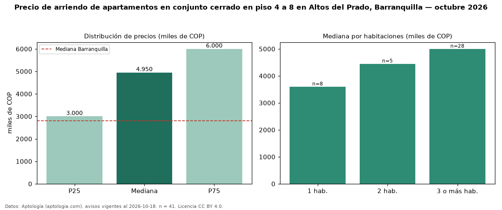

Precio de arriendo de apartamentos en conjunto cerrado en piso 4 a 8 en Altos del Prado, Barranquilla — octubre 2026
En Altos del Prado, Barranquilla, la mediana de canon mensual de apartamentos en conjunto cerrado en piso 4 a 8 es COP 4,95 millones, según 41 avisos vigentes. Frente a la mediana de los apartamentos en conjunto cerrado en arriendo de Altos del Prado (COP 4,47 millones, n = 126), queda 11 % por encima; este segmento reúne el 33 % de esos avisos. Por metro cuadrado, la mediana es COP 33.034/m² al mes (n = 40), 3 % por debajo de los apartamentos en conjunto cerrado en arriendo de Altos del Prado (COP 34.188/m²). El área mediana anunciada es 128 m². El segmento con más oferta es el de 3 o más habitaciones (28 avisos, mediana COP 5,00 millones); pasar de 1 habitación a 3 o más habitaciones cambia la mediana +39 %. La mitad central de los avisos va de COP 3,00 millones a COP 6,00 millones (razón 2,0), una dispersión alta. El estrato más frecuente es 6 (59 % de los avisos con estrato). La mediana de todos los apartamentos en arriendo de Barranquilla es COP 2,80 millones (+77 % de diferencia). Datos: Aptología (aptologia.com), CC BY 4.0 — https://www.aptologia.com/arriendo/barranquilla/altos-del-prado. Archivos: PDF, CSV con las cifras y gráfica PNG.

| Avisos únicos | 41 |
|---|---|
| Percentil 25 | COP 3.000.000 |
| Mediana | COP 4.950.000 |
| Percentil 75 | COP 6.000.000 |
| Mediana por m² | COP 33.033 |
Fuente: avisos vigentes de portales inmobiliarios recopilados por Aptología, deduplicados (mínimo 30 avisos únicos por celda). Precios pedidos, no cerrados. Fecha: 2026-10-18.